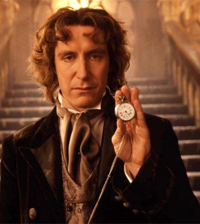

Yedinci Doktor

Sekizinci Doktor (8. Doktor), Britanya bilim-kurgu dizisi Doctor Who'nun sinema filminde görünen rejenerasyonu'dur. 8. Doktor sadece televizyon filminde ve Night of the Doctor mini bölümünde görülmüştür. Daha sonra Doctor Who dünyasına sesli kitaplar, radyo dinletileri vb. şekillerde dahil olmaya devam etmiştir.
Yedinci Doktor Skaro'da işlediği kötü suçlar yüzünden Dalekler tarafından cezalandırılıp sıvı forma koyulan Usta ile birlikte Galiffrey'e gitmektedir. Fakat son anda TARDİS'de bir sorun çıkar ve Usta'da o karışıklıkta sıvı halde bulunduğu kutusundan çıkmayı başarır. Doktor 1999 San Francisco'suna iniş yapmıştır. Etrafa bakınmak için TARDİS'den çıkar ve o sırada Chang Lee'yi kovalayan gangsterler Doktor'u vurur. Chang Doktor'u hastaneye götürür fakat rejenerasyon sırasında ameliyatta uyguladıkları anestezi Doktor'un rejenerasyonunu mahveder. Doktor tam morg'a konulur ve bu sırada rejenerasyon geçirir. Usta ise Doktor'u ameliyat eden Grace Holloway'ın sevgilisinin bedenine yerleşir. O çoktan Doktor'u aramaya başlamıştır. Chang ise öldüğünü düşündüğü Doktor'un eşyalarını alır. TARDİS'e gelir ve kapıyı açıp içeriye girmek ister. Usta ise orada TARDİS'i bulmuş ve Doktor'u beklerken Chang ile karşılaşmıştır. Usta Chang'e Doktor'un kötü biri olduğunu söyleyerek onu kendi tarafına çeker. Doktor ise hastanede kim olduğunu bilmeden gezinirken Doktor Grace'e rastlar. Grace Doktor'u evine götürür ve iğneyi Doktor'un içinden alır. Doktor Zaman'ın akmaya başladığını ve Usta'nın serbest kalıp Ahenk Gözü'nü ele geçirmeye çalıştığını anlar. TARDİS'i bulmak ve Usta'yı yeniden hapsetmek için Grace ile TARDİS'in olduğu yere Büyük Balo'ya gider. Usta yeniden Doktor ile karşılaşınca Ahenk Gözü'nü açmak için Chang'i kullanır. Fakat Doktor Chang'i durdurmayı başarır. Usta bu kez Grace'ı Ahenk Gözünü açmaya ikna eder. Ahenk Gözü açılır ve Doktor bu sırada serbest kalır. Doktor ve Usta arasında bir kavga yaşanır ve Usta Ahenk Gözü'ne düşer. Doktor ona yardım etmeye çalışsa'da bir şey yapamaz.
8. Doktor'un Doctor Who televizyon yayınında son kez görünüşüdür. 8. Doktor 2013 yılında dizinin 50. yılına özel olarak yayınlanan bu bölümde gemisi düşmekte olan Cass'a yardıma gelir. Onu düşen gemiden kurtaracakken Cass TARDİS'i görünce 8. Doktor'un bir Zaman Lordu olduğunu anlar. Onunla gelmeyi reddeder ve 8.Doktor'da onu oradan almadan gitmeyince gemi patladığında ikisi'de ölürler. Gemi enkazı Karn'a düşer. 8. Doktor'u Karn Kardeşliği bulur ve onun savaşı durduracak tek kişi olduğunu söyler. Karn Kardeşliği'nin ikna etmesiyle rejenerasyon geçirmesine yardımcı olacak bir iksir içen 8.Doktor Savaş Doktoru'na dönüşür.
Diğer Doktorlar'da olduğu gibi 8. Doktor'da değişmeyen şey iyilik ve yardım duygusudur. Doktor Usta Ahenk Gözüne düşerken elini uzatıp Elimi Tut demiştir. 8. Doktor esprili bir Doktor'dur. Usta'yı engellemek için Balo Binası'na motorsikletle giderken onları durduran polis memurunun silahını alarak Dur yoksa kendimi vururum demiştir. 8. Doktor 4. Doktor ve diğerleri gibi Yumuşak Şeker sever.Balo Binası'nda onları kapıda karşılayan görevliye Yumuşak Şeker alır mısın? diye sormuştur.
8. Doktor filmdeki esprileri ve Paul Mcgann'ın performansıyla yeterince popüler bir Doktor olmayı başarmıştır. 1996'daki bu filmden sonra bir daha televizyonda gözükmemiştir. Fakat sesli kitaplar,radyo bölümleri ve kitaplar sayesinde 8. Doktor 2005 yılına kadar Doctor Who dünyasında kalarak popülaritesini arttırmıştır.